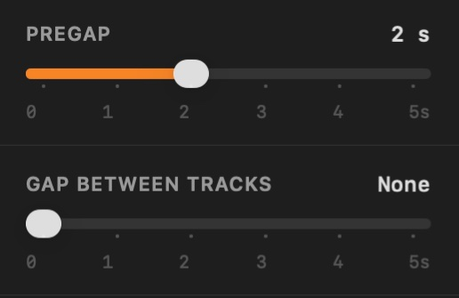
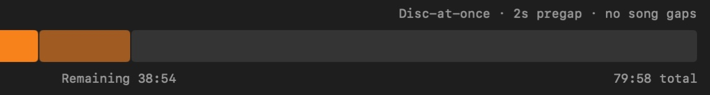

How to burn a gapless audio CD on a Mac
No silence where the music doesn't have any
A DJ mix, a live album or a record like Dark Side of the Moon is meant to play straight through. Burn it the usual way and you often get two seconds of silence at every track change. Getting rid of it takes two things: burning the disc in the right mode, and setting every gap to zero.
Where the silence comes from
Every track on an audio CD can have a pregap: a stretch before the track's real start that a player counts down through as negative time. The CD standard fixes the first track's pregap at two seconds or more. Every other pregap is up to whoever burns the disc, and can be zero.
How much control you get depends on the burning mode:
- Track-at-once writes each track separately, stopping the laser in between. The drive has to leave a gap, traditionally two seconds, so continuous audio gets broken up.
- Disc-at-once writes the whole disc in one pass, laying out every pregap in advance. Zero means zero: the last sample of one track sits right next to the first sample of the next.
So a gapless CD needs disc-at-once, with every pregap after the first set to zero. Nearly every USB burner made in the last twenty years can write disc-at-once.
Step by step in Pregap
- Add the tracks in order. Drag the album folder or a playlist onto the window, or use File ▸ Import Files. Drag rows to reorder.
- Check the gaps. Pregap always burns disc-at-once, and the Gap Between Tracks slider starts at None, so there is usually nothing to do. If you have moved it, slide it back to None.
- Fill in CD-Text if you want track names on players that show them. This doesn't affect the gaps.
- Insert a blank CD-R and check the disc bar: the running time has to fit the disc, about 80 minutes on standard media.
- Burn. Preflight checks the drive, the disc and every file before anything is written.


Start from the right files
Disc-at-once can only be as gapless as the audio you give it:
- Lossless is safest. FLAC, ALAC, WAV and AIFF hold exactly the samples they were made from, so tracks cut from one continuous recording join up perfectly.
- MP3 and AAC can add their own silence. Lossy encoders pad the start and end of every file. Well-made files record how much padding there is, so it can be trimmed away, but files from older or careless encoders don't, and the padding can be heard as a tiny click or pause. For a continuous mix, burn from lossless files if you have them.
- Silence baked into the file stays. If a track fades out or has silence at its start, no burner will remove it. That is the recording, not a gap.
Check the finished disc
Play the track changes on the player you care about. If you still hear a gap on a disc burned disc-at-once with zero gaps, the player may be the cause: some computers and older car stereos briefly mute at every track change. See Why your burned CD has gaps between tracks.